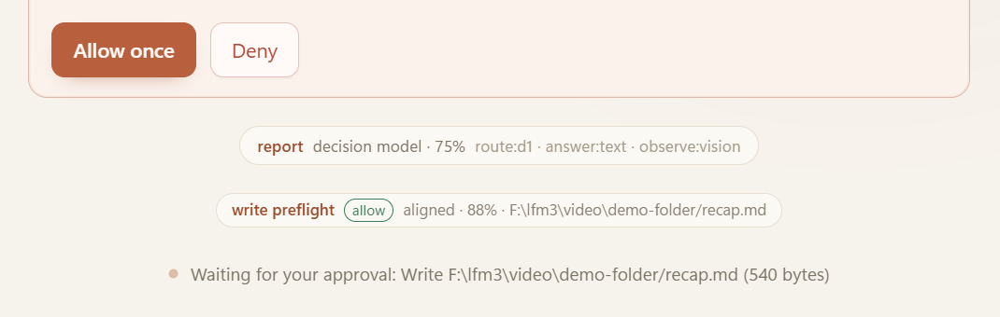

Using the app
Approvals and safety
The harness can read and search on its own. It cannot change a file without a person pressing Allow once, and nothing it says is treated as proof.
The harness can read and search on its own. It cannot change a file without a person pressing Allow once, and nothing it says is treated as proof.
Reads run, writes wait#
| Operation | Runs immediately? | Why |
|---|---|---|
list_files, read_file, search_files, related_files | Yes | Read-only and confined to the workspace |
look, transcribe | Yes | Reads an image or audio file the person pointed at |
write_file, edit_file | No | Creates a pending action that needs approval |
| Folder switch, model download | No | Explicit person actions; a folder switch is refused while work is live |
A read that succeeds is evidence the model can use. A write that succeeds only happens because you decided it should.
The approval card#
A pending write or edit appears inline in the conversation with:
- the full path inside your workspace;
- the exact content for a new file, or an exact diff for an edit;
- Allow once and Deny;
- the time it was proposed, so the ten-minute expiry is not a surprise.
What each choice does:
| Choice | Effect |
|---|---|
| Allow once | Executes that single action, returns its real output to the model, and continues the turn. The next write needs its own approval. |
| Deny | Leaves the file untouched and tells the model not to retry the same change. |
| Approve and let it expire | After ten minutes the action is no longer executable. Nothing is written. |
| Stop during a turn | Cancels the stream and any pending approval in that turn. |


- Allow onceExecutes this one action. The next write needs its own approval, and there is no session-wide grant.
- DenyLeaves the file untouched and tells the model not to retry the same change.
- RouteThe turn was classified as a report, so a write is expected. Routing is a hint, never a grant.
- Write gate
allowwithaligned 88%, and the resolved target inside the workspace. - Pending actionThe exact operation waiting on you, with its measured size. It expires after ten minutes.
There is no "allow for this session" or "always allow" setting. That is deliberate: a blanket grant would turn one informed decision into an unbounded one.
Pending actions are persisted with the transcript, so a restart does not lose track of one, and does not silently apply one either. A decision, once stored, stays stored.
Before a card ever appears#
Several refusals happen earlier, so the card you see is already the plausible subset of what the model wanted:
- Grant check. A tool that was not offered this turn is refused before any path resolution or side effect.
- Path confinement. Every model-supplied path goes through one shared resolver, used by chat, jobs, and mission checks, so they cannot disagree about what an escape is.
- Write gate. Before the card is created, d1 compares the change with your latest request. A confident
contradictsholds it: no card, no write, and the model is told not to retry. - Duplicate refusal. A repeated identical call is refused instead of quietly looping.
Path rules in detail#
The resolver accepts relative paths inside the canonical workspace root. It also accepts a path that begins with the exact trusted workspace root, because models sometimes echo it back; that prefix is stripped, and any other absolute path is still rejected.
The following are refused outright:
- parent components (
..) anywhere in the path; - absolute paths outside the workspace;
- reserved device names;
- any component that is a symbolic link or reparse point — this closes the "innocent folder, link to elsewhere" route;
- a path whose canonical form falls outside the workspace root;
- for reads, a path that does not exist or is not a file.
Writes to a path whose parent does not exist yet are built forward, so a new out/report.md lands as requested rather than in the workspace root.
Links are not followed
If your workspace contains a junction or symlink to another drive, tools treat it as forbidden, not as a shortcut. Move the real files into the workspace if you want the harness to read them.
The two gates#
Both gates are advisory and both are answered by the decision model when it is installed. Full behaviour is on the Chat page; the safety-relevant summary is:
| Gate | When | Can it authorize? | What a confident answer does |
|---|---|---|---|
| Write gate | Before a write or edit becomes a card | No | Holds a contradiction (at or above 7,500 bps) or adds an uncertainty note |
| Evidence gate | After the first read-only results | No | Adds a note to state what evidence is missing (anything but sufficient, at or above 6,500 bps) |
If d1 is absent, slow, low-confidence, or returns a label outside its contract, the gate stays silent and behaviour is exactly what it was before the gate existed. A gate can never approve, deny, execute, or weaken anything.
Approvals versus verified tasks#
Verified tasks use a different approval surface, because they approve plans, not just diffs:
- The plan is frozen with its acceptance checks and approved before any step runs.
- Each step's execution is recorded with provenance in the run journal.
- A retry keeps the same frozen contract; it cannot loosen a check.
Chat and verified work share the engine, the model manager, and the process supervisor, but not their completion rules or their approval records. See Verified tasks.
Interruptions#
- A turn stopped mid-way comes back marked cancelled, not replayed.
- A verified run killed mid-attempt is reported
interrupted; the next boot reconciles it and does not resume it. - A job that the engine stopped in the middle of is reported
interruptedrather than resumed.
Nothing that was pending at the moment of an interruption is applied later on the harness's own initiative.
What stays your responsibility#
The harness narrows what can happen; it does not review content for you. You are still the person who decides:
- whether the diff is what you asked for, and whether it is correct;
- whether the folder you chose is the right one for this work;
- whether the model's claims about the files are plausible — read the cited file when it matters;
- whether to trust a downloaded artifact from outside the app (the pinned downloads are verified; a file you copied in is your own provenance problem);
- whether to install a release whose checksum does not match.
The design assumption is not that the model is trustworthy. It is that the person is in the loop, and that the interesting failure modes are visible.